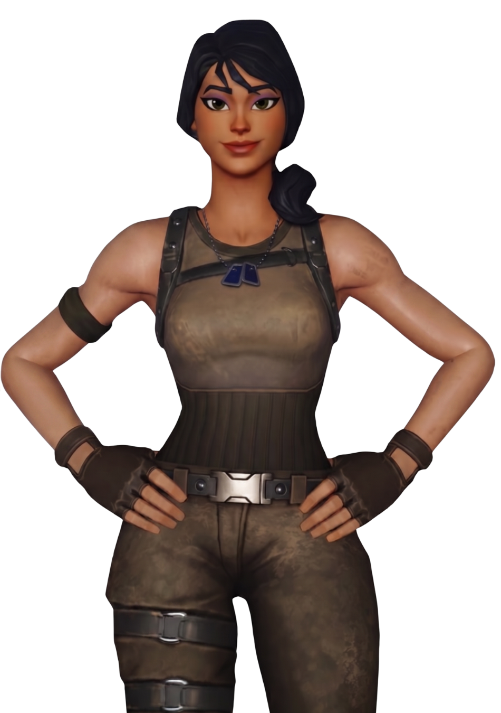
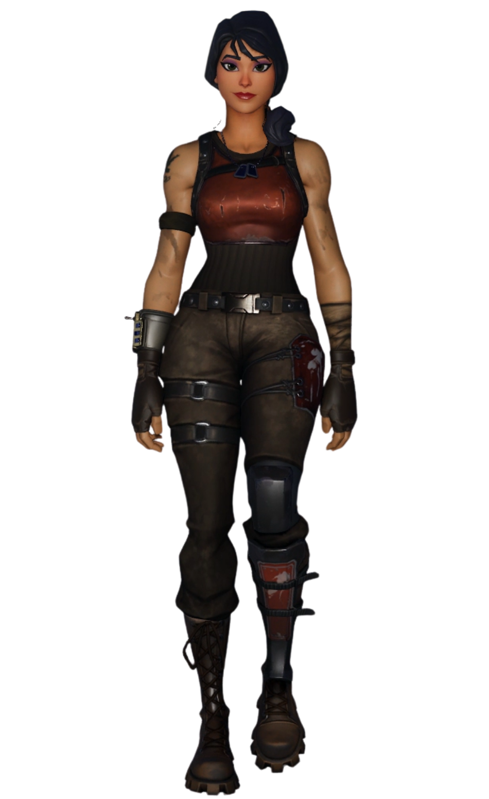
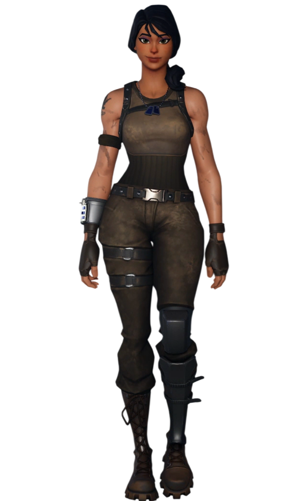

Scarlet
// Archives Biographiques
L'Éclaireuse d'Orion
Ancienne ferrailleuse et mécanicienne au franc-parler issue des décharges d'Orion, Scarlet arpentait ce monde hostile avec son jeune frère Barret. Leur destin bascule lorsque ce dernier découvre une mystérieuse amulette boussole liée au Point Zéro. Surnommée affectueusement "La Rouille" par le soldat Raptor, elle s'allie à lui et à Harper pour percer les secrets de l'île. Lors de l'invasion dévastatrice du Roi des Glaces, Scarlet troque définitivement ses outils pour les armes, luttant avec acharnement pour protéger son groupe. Faisant face à la montée en puissance du Zéro et à l'effondrement de son monde, elle disparaît au moment où la réalité elle-même se disloque, laissant son sort en suspens dans le chaos absolu.
// Variantes Visuelles

